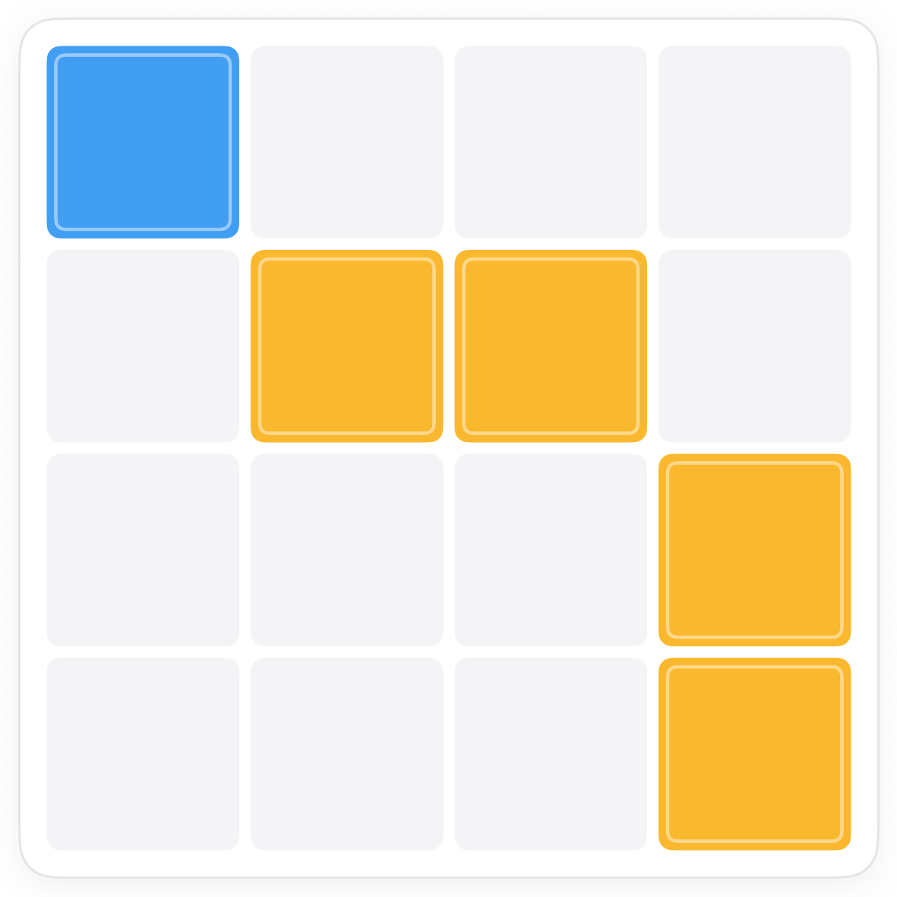
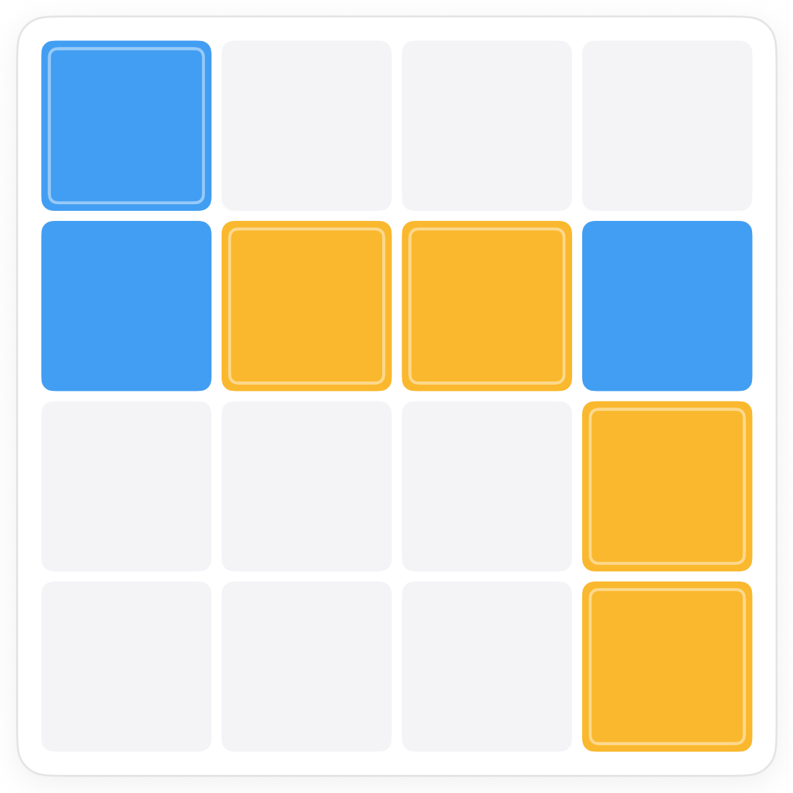
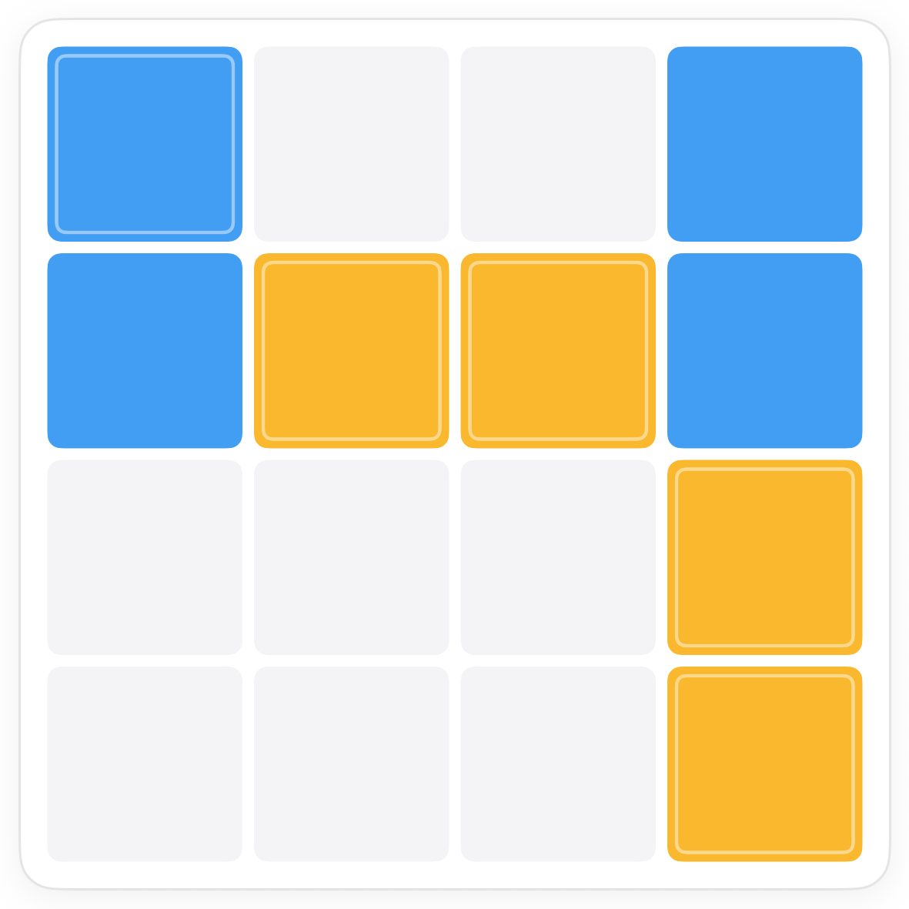
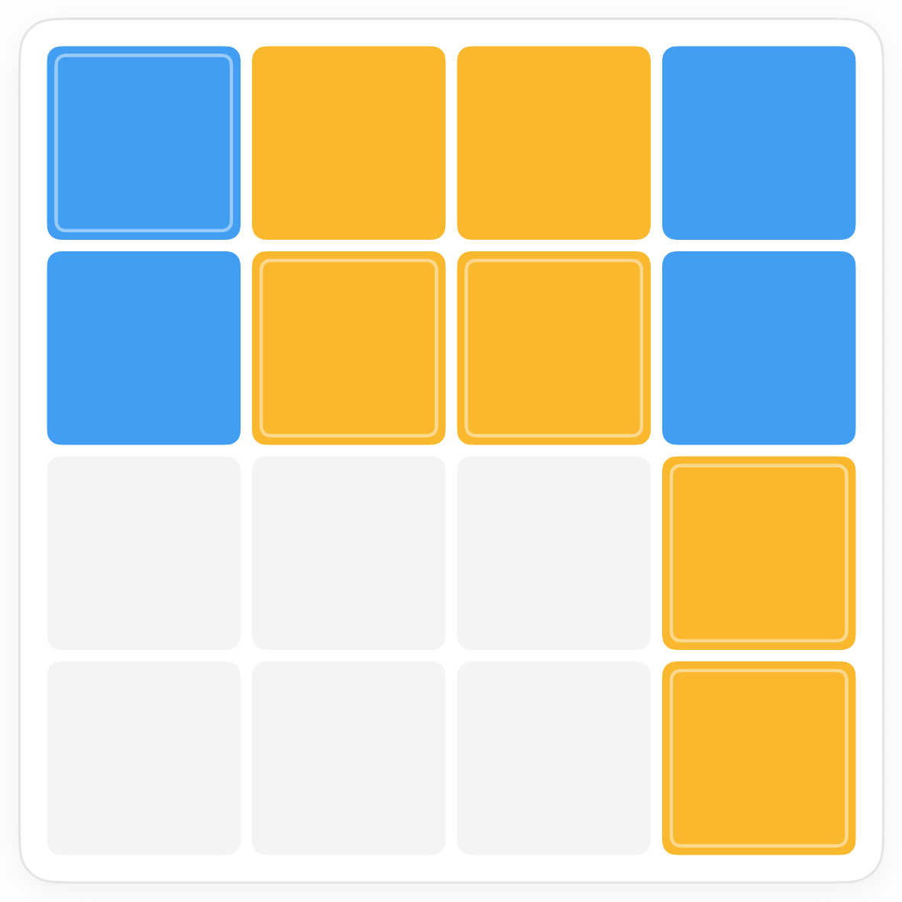
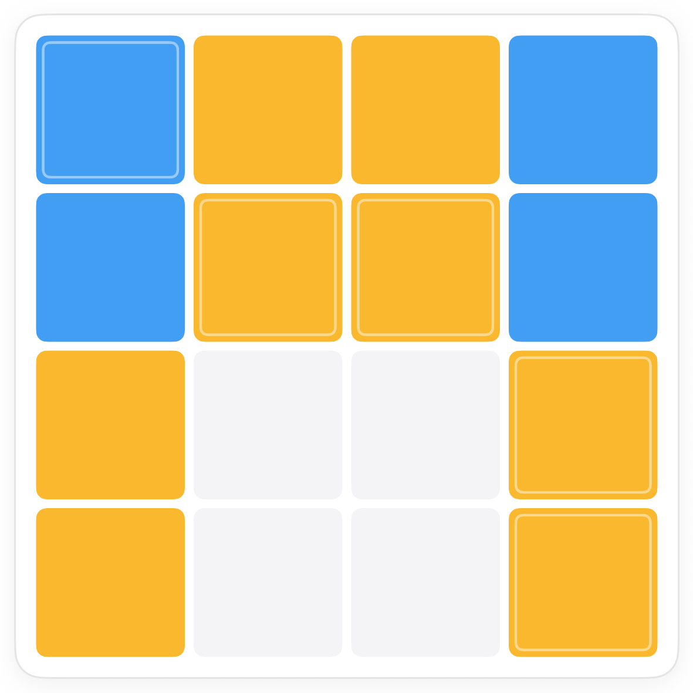
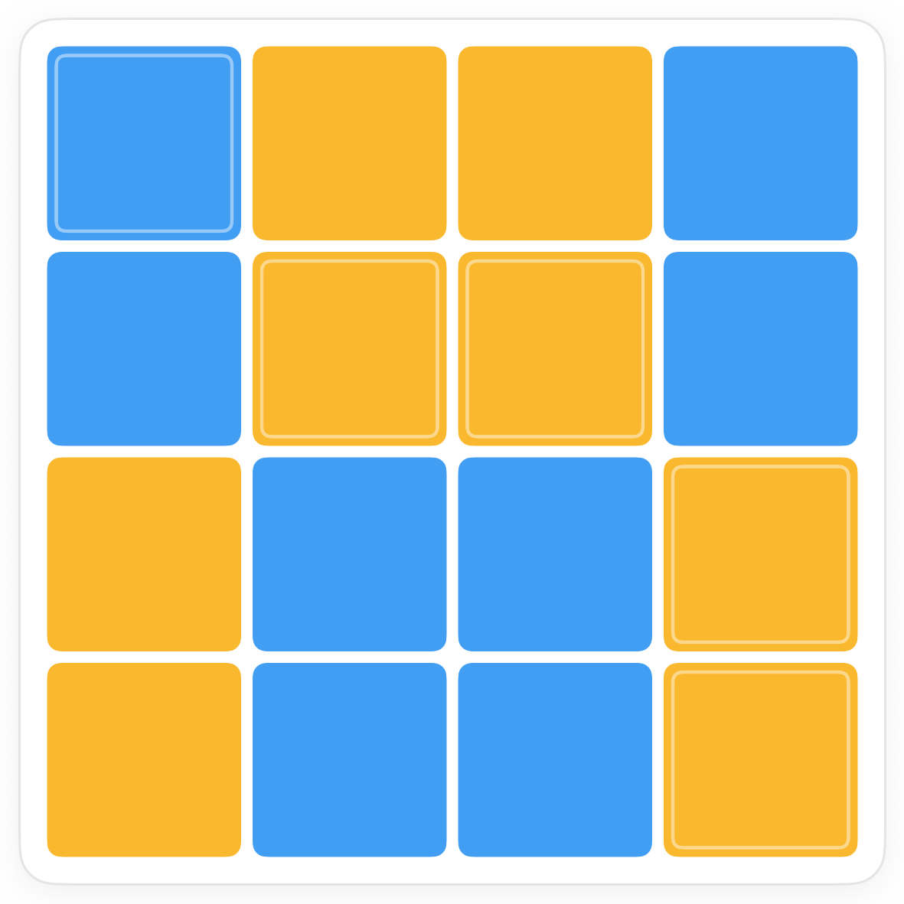

How to play Duets.
Duets is Pocketful's name for the puzzle also known as Takuzu, Binairo or 0h h1. Two colours, two rules, and a board that fills itself once you see the two tricks.
The board.
A square grid, here 4 by 4, with a few squares already coloured blue or yellow. Those are the givens. You colour the rest.

The two rules.
On a 4 by 4 board that means two of each colour in every line. Tap a square to cycle it: blue, then yellow, then clear again.
Trick one: two together means the ends are the other colour.
Wherever two squares of one colour touch, the squares on either end of the pair cannot be that colour too, or you would have three in a row. So they are the other colour.

Trick two: count the line.
Each line needs exactly two of each colour. Once a line has its two of one colour, every remaining square in it is the other colour.



Finishing.
The last squares fall to the same two tricks. If the app shows a red outline, you have three in a row or too many of one colour; tap the square again to cycle it.

Common questions.
Are two identical rows allowed?
In Pocketful's Duets, yes. The classic Binairo rule that forbids two identical rows or columns is not used here; balance and no three in a row are the whole game.
What do bigger boards change?
Only the count. A 6 by 6 board needs three of each colour per line, an 8 by 8 needs four. The two tricks work exactly the same.